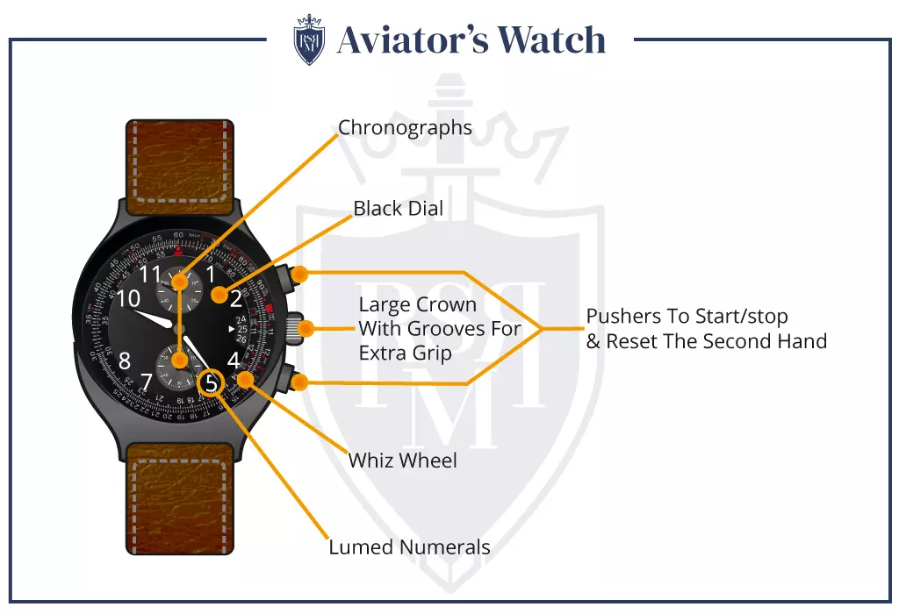

A watch is a small clock carried or worn by a person. It makes it easy to see the time. It is also a fashion accessory for men and women, and expensive watches are designed for this purpose. A watch may be one of the few accessories worn by a person.
